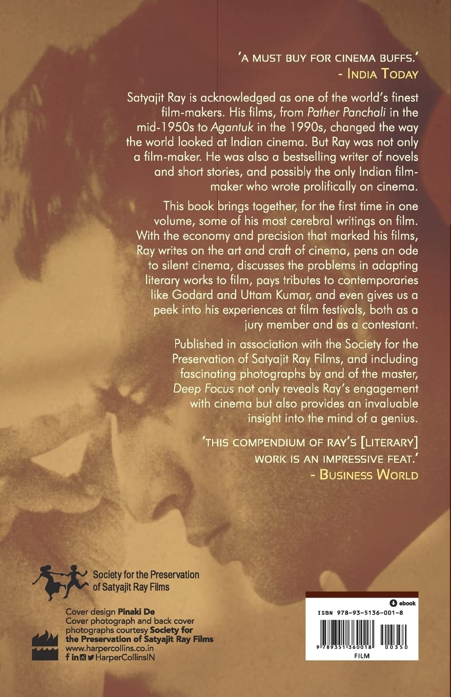
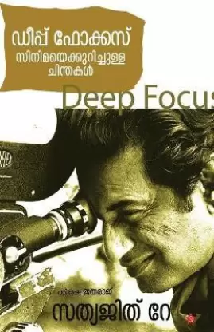

- Home
- Architecture
- Film, Tv and radiom
- Deep focus
- 
- 
Author: Sandip Ray Satyajit Ray
Author: Satyajit Ray
Publisher: HarperCollins India
310.000 đ
Description
Satyajit Ray is acknowledged to be one of the world's finest film-makers. This book brings together some of his most cerebral writings on film.With the economy and precision that marked his films, Ray writes on the art and craft of cinema, pens an ode to silent cinema, discusses the problems in adapting literary works to film, pays tribute to contemporaries like Godard and Uttam Kumar, and even gives us a peek into his experiences at film festivals, both as a jury member and as a contestant. Including fascinating photographs by and of the master, Deep Focus not only reveals Ray's engagement with cinema but also provides an invaluable insight into the mind of a genius